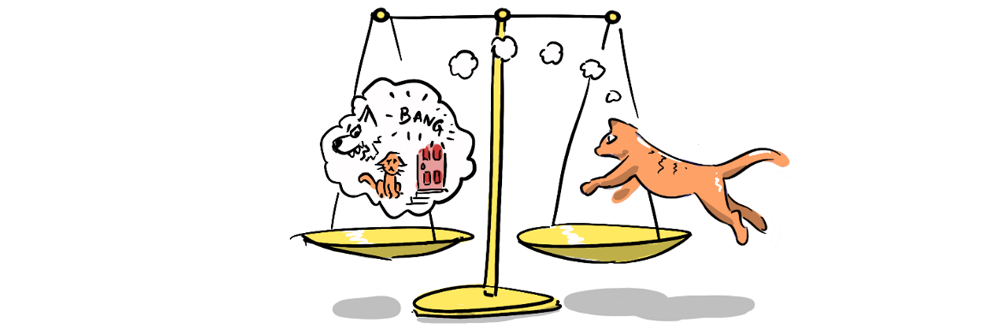

In part 1, we delved into the human tendency to morally license negative behavior, rationalised either by prior good actions or by perceiving oneself as morally superior to others. This latter scenario, which we term 'Negative Moral Licensing', involves using others' perceived misdeeds to excuse our own actual wrongdoings. So, unless our perceptions are perfect, this practice will lead to a negative sum game.

Humans possess not only a capacity for moral licensing but also an intrinsic sense of fairness, albeit imperfectly tuned. We've observed how certain personalities justify their self-righteousness by citing a "competitive social jungle". However, the complexity intensifies as our rationality is often clouded.
The Ultimatum Game is a classic example in game theory. It involves two players: one receives $20 and proposes a division of this amount with the second player. If the second player accepts, the money is divided accordingly. If not, neither player receives anything.

A study by Matthew Lieberman and colleagues employed the Ultimatum Game to explore reactions to fair and unfair monetary offers. Most participants rejected offers they deemed unfair, displaying a potent aversion to perceived injustice, and a willingness to forgo money to punish such unjustice. Brain scans revealed automatic positive reactions to fairness and negative reactions to unfairness, underscoring an innate bias towards equitable treatment.
Our sense of fairness is frequently misaligned with reality, primarily due to cognitive biases like the availability heuristic where we are intimately acquainted with our own good intentions and all the time and effort we've put into something, but have limited experience of the intentions and struggles of others. This is further compounded by a self-serving bias, where we prioritize our own interests and virtues over those of others.
The implications of this miscalibrated fairness are profound and multi-layered and can lead to a downward spiral:
- Humans naturally gravitate towards retributive justice.
- Individuals often overestimate their own contributions and virtues.
- Correspondingly, they are likely to underestimate others' contributions and virtues.
- This underestimation of others leads to harsher interpretations of others' actions or words, magnifying minor differences in opinion into malicious attacks.
- Acting on a perceived sense of fairness, people justify negative behavior equivalent to this skewed perception of others' actions leading to an overreaction in self-justified behavior.
- When both parties in a conflict harbor these misperceptions, perceived aggression leads to actual aggression, resulting in a negative feedback loop.
The combination of a desire to penalize perceived unfairness (even at personal cost) and a miscalibrated sense of fairness is a precarious mix, because it turns out that seeking retribution often intensifies anger rather than alleviating it. We see this in online conflicts where people "vent" by adding rhetorical barbs, which only serve to drive the argument to become more virulent.

The study found that verbally acknowledging the contribution or value of other people lowered the bias. Humanising the other, particularly in online disputes, and showing your humanity through humour, personal reflections, or anecdotes accesses the balancing effects of more pro-social instincts.

The opposite of "Strawmanning" (the misrepresentation of your opponent's argument in order to defeat it), "Steelmanning" an opponent's argument is to express it in the strongest form possible, potentially even better than they have!
This will often reveal to you the underlying values that are driving your opponents opinion, and you might find those are shared values that you can refer to, which might make you update your own opinions, or make you better able to argue your point convincingly. All the while, you are reinforcing that you are really hearing the other person. It's also helpful to take the most charitable reading you can of your opponent's intentions and motivations, given our instinctive tendency to do the opposite.
As mentioned in part one, in the case of positive moral licensing, if you can make your good actions automatic, the less you should be affected by the subconscious awareness of those actions and therefore avoid falling into the trap of licensing bad behaviour to balance them.
Experiments with moral licensing have found that the people who overcame moral licensing often did so because they had pre-made their decisions by having a principle of, for instance, "I always give money to homeless people" or "I never steal" or "I always pick up rubbish when I see it". These absolutes can become habits that override moments of relative weakness.

By recognising the biases in our own behavior and those of others, we have the opportunity to reshape our interactions into positive, constructive experiences. It's a challenging yet rewarding path, one that requires empathy, understanding, and a commitment to shared values. As someone who has, at times, argued with "people who are wrong on the internet", I can say, I've tried these approaches and they work.
An old thread I couldn't bring myself to delete or migrate to the new comments plugin.